Ordination by eigen-decomposition
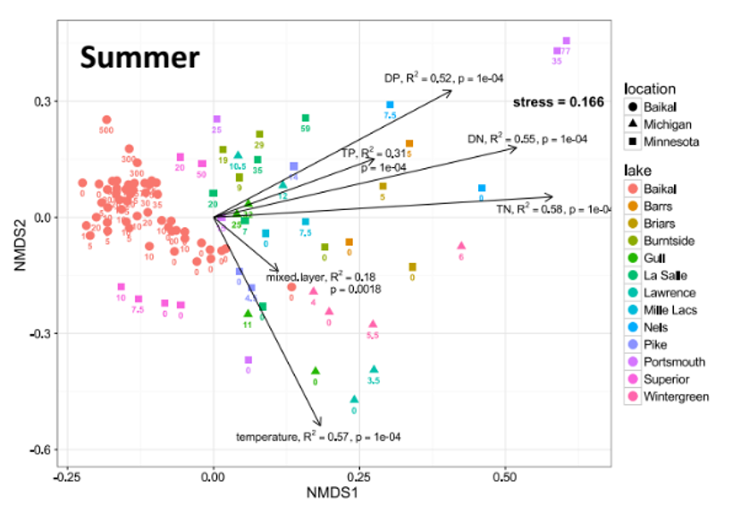
An ordination of the kind we are building toward.
prcomp() and read the answer. Today we ask what it actually solved.Note
Gotelli & Ellison, A Primer of Ecological Statistics, Ch. 12 — The Analysis of Multivariate Data — is the core reference.
For object i and component k:
\[z_{ik} = c_{k1}y_{i1} + c_{k2}y_{i2} + \cdots + c_{kp}y_{ip}\]
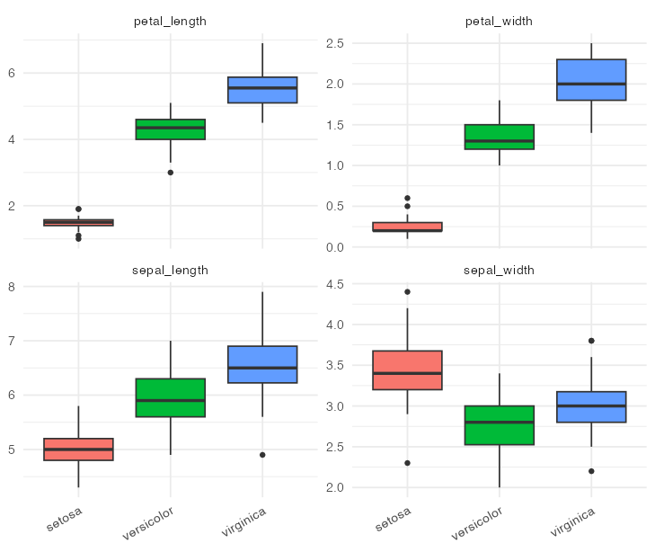
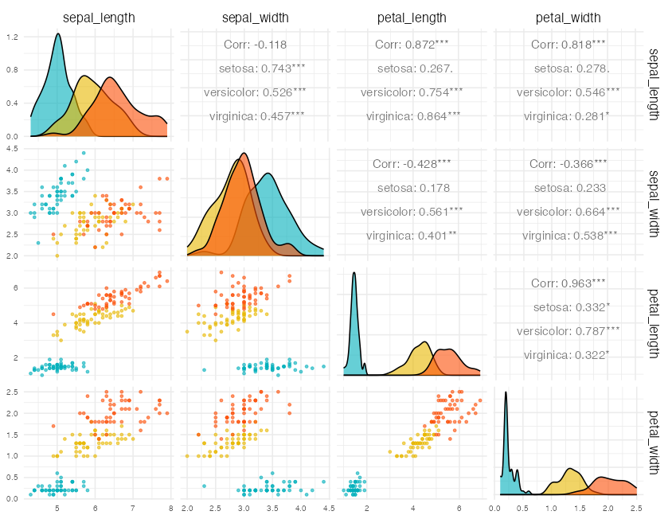
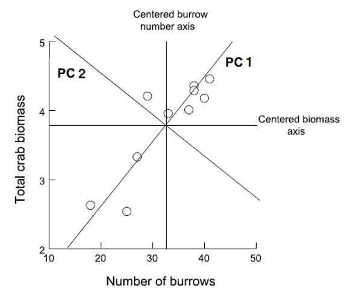
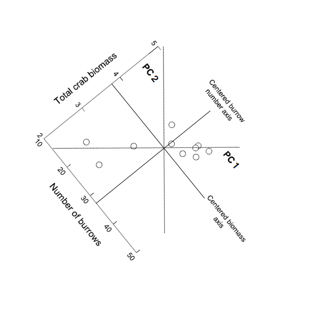
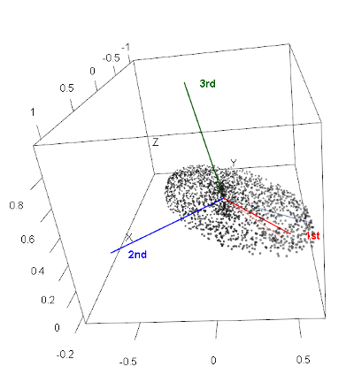
prcomp(x, scale. = TRUE) is “use the correlation matrix”.prcomp() will not handle missing values for you.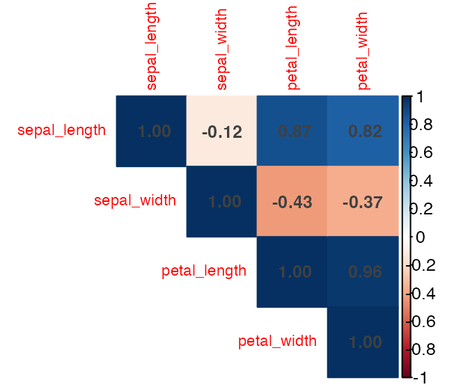
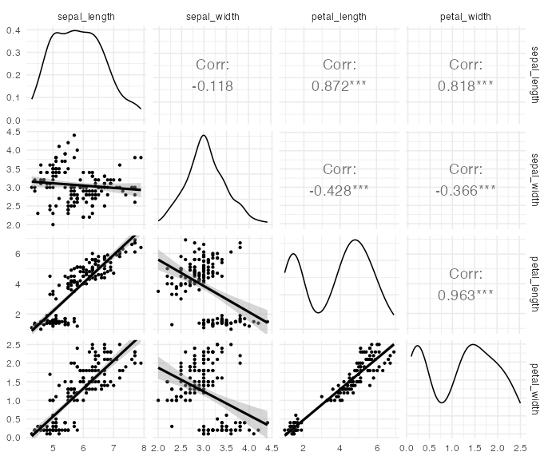
Relationships are close to straight lines — the setosa cluster makes some panels look bent, but within species they are linear.
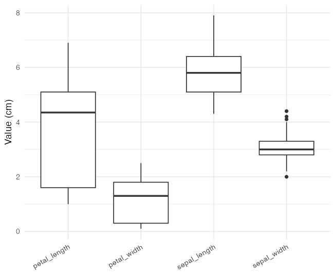
A handful of mild sepal-width outliers, nothing extreme. Note how much wider petal length spreads than sepal width — that is the standardization problem in one picture.
## sepal_length sepal_width petal_length petal_width
## 0.828 0.436 1.765 0.762Note
scale() here, then prcomp(..., scale. = FALSE), is exactly equivalent to handing the raw data to prcomp(..., scale. = TRUE). We do it in two steps so the standardized values are visible.
center = FALSE, scale. = FALSE because scale() already did both. Doing it twice is harmless but confusing.vegan::rda(iris_scaled) gives the identical decomposition under a different name — PCA is PCA.| Element | What it holds |
|---|---|
sdev |
\(\sqrt{\lambda}\) — SD of each component |
rotation |
the eigenvectors: loadings, variables × components |
x |
the scores: objects × components |
center, scale |
what was subtracted and divided |
sdev^2 gives the eigenvalues. Everything else in this lecture is read off rotation and x.tibble(
Component = paste0("PC", 1:4),
Eigenvalue = round(eigenvalues, 3),
Percent = round(prop_variance * 100, 2),
Cumulative = round(cumsum_variance * 100, 2))
## # A tibble: 4 × 4
## Component Eigenvalue Percent Cumulative
## <chr> <dbl> <dbl> <dbl>
## 1 PC1 2.92 73.0 73.0
## 2 PC2 0.914 22.8 95.8
## 3 PC3 0.147 3.67 99.5
## 4 PC4 0.021 0.52 100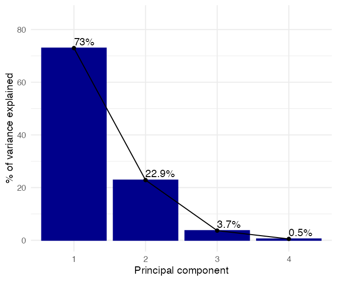
The rule: before you write a sentence about a component, translate the sign into biology. Say “larger flowers”, not “higher PC1”.
## sepal_length sepal_width petal_length petal_width
## 0.521 -0.269 0.580 0.565## sepal_length sepal_width petal_length petal_width
## -0.377 -0.923 -0.024 -0.067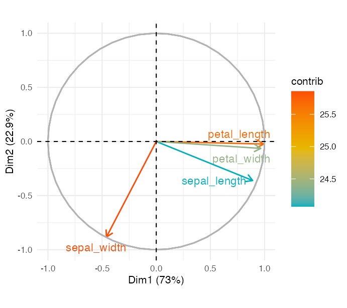
iris_pca$x holds them, 150 rows × 4 components.## # A tibble: 9 × 5
## species PC1 PC2 PC3 PC4
## <fct> <dbl> <dbl> <dbl> <dbl>
## 1 setosa -2.26 -0.48 0.13 0.02
## 2 setosa -2.07 0.67 0.23 0.1
## 3 setosa -2.36 0.34 -0.04 0.03
## 4 versicolor 1.1 -0.86 0.68 0.03
## 5 versicolor 0.73 -0.59 0.09 0
## 6 versicolor 1.24 -0.61 0.55 0.01
## 7 virginica 1.84 -0.87 -1 -0.05
## 8 virginica 1.15 0.7 -0.53 -0.04
## 9 virginica 2.2 -0.56 0.2 0.06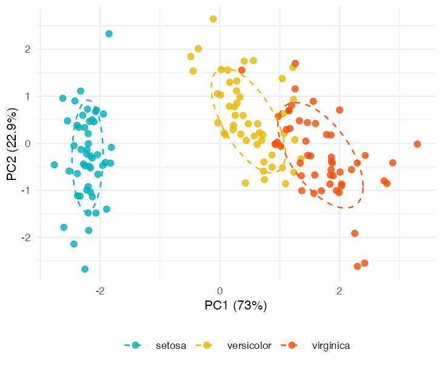
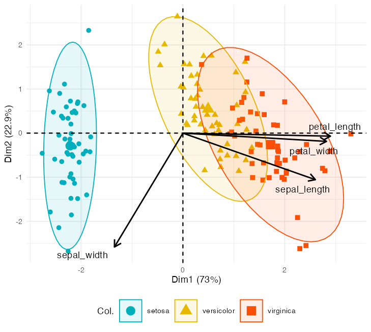
“The four floral measurements were standardized to zero mean and unit variance and subjected to principal component analysis on the correlation matrix (
prcomp(), R 4.6.2). Two components were retained on the basis of the scree plot and cumulative variance (> 80%).”
“PC1 and PC2 together explained 95.8% of the variation (PC1 73%, PC2 22.9%). PC1 loaded positively on petal length (0.58), petal width (0.57) and sepal length (0.52), and negatively on sepal width (−0.27)…”
iris.